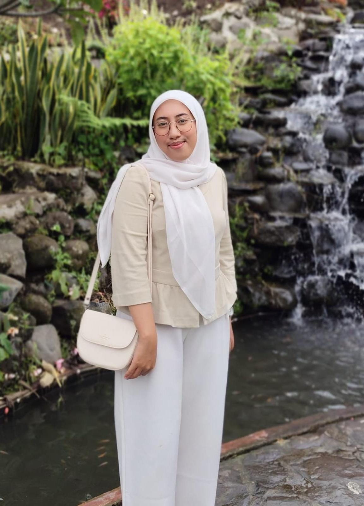

About Me
Halo! Saya seorang mahasiswa Informatika di Universitas Bengkulu, lahir pada tahun 2005. Saya memiliki minat besar dalam bidang teknologi dan pengembangan perangkat lunak. Saya suka mempelajari hal-hal baru, terutama yang berhubungan dengan pemrograman dan pengembangan aplikasi.